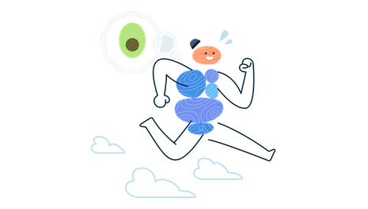

Hi! My name is Inés Morán, I am Dietitian-Nutritionist and yet I have never liked the word "diet". I firmly believe that, to achieve a goal, whatever it may be, it is not necessary to suffer in order to reach it.
For this reason, in my consultation I promote the individualisation of each person, so that together we can achieve the best version of ourselves. Without restrictions, prohibitions or guilt that frustrate a path of learning and habit change. Whatever your goal may be, let's go for it.
I graduated from the University of Valladolid, and I am currently a member of the College of Dietitians-Nutritionists of Castilla y León (Spain), nº CYL00346.
My life has always been linked to sports, as I have been a swimmer since I was 8 years old. As a result of my discipline and with the aim of improving my performance, my interest in the world of nutrition and especially sports nutrition began. That is why I specialised by studying a master's degree in Sports and Exercise Nutrition at the University of Westminster (London).
But it's not all about sport. This wonderful profession has given me the opportunity to help other people through nutrition, whether it be improving habits and relationships with food, achieving goals or improving the treatment of pathologies; which is what currently brings me the most professionally and personally.
In addition, due to my tireless curiosity, I became interested in the world of research, and as a result, I had the pleasure of carrying out 2 scientific projects:
The first of them together with the University of Valladolid, concerning the various methods for measuring body composition in young swimmers and their usefulness for sports performance.
The other, with the Regional Center for Sports Medicine in Valladolid (CeReMeDe), where I worked with the group of specialists at the center, on the nutritional assessment of dancers.
The knowledge that I have acquired in each of these fields has equipped me with the necessary tools to achieve a single goal: Improving the health of my patients.
Online Consultation
The online service can facilitate your visit from the comfort of your own home. All you need is a mobile phone, computer or tablet and a willingness to learn and improve.
Informative Consultation
Free20min
Skype / WhatsApp / Zoom
This free session is useful to:
Know you and your objectives
Know if I am the professional you are looking for
Solve any doubts
Better assess your needs
Determine which service is best suited to your case
First Consultation
₤501h
Skype / WhatsApp / Zoom
Complete assessment of the patient, the clinical history is taken, taking into account:
Objectives and needs
Nutritional and sporting habits
Food preferences
Lifestyle
Follow-ups
₤3530min

Skype / WhatsApp / Zoom
Every 15 days (or more frequently according to preference)
Assessment of progress
Addresing doubts
Delivery of new menu
Making modifications
How I work
Mission
My fundamental goal as a professional is to always seek overall health without restrictions, always accompanied by flexibility.
Nutritional education
I like to make it clear that foods are not inherently good or bad, but all of them should be viewed in context, especially taking into account the patient's goals. This makes nutritional education an essential part of my work, so that when the patient leaves, they will know how to make good choices for themselves on a daily basis.
Individualised study
My priority is to get to know the patient thoroughly in order to carry out the most individualised intervention possible, which is why I like to invest enough time in the first consultation. Remember that we are not all the same, and each person will have different needs. It will be the patient themselves who chooses how to develop the proposed treatment, so that the adaptation to it is perfect.